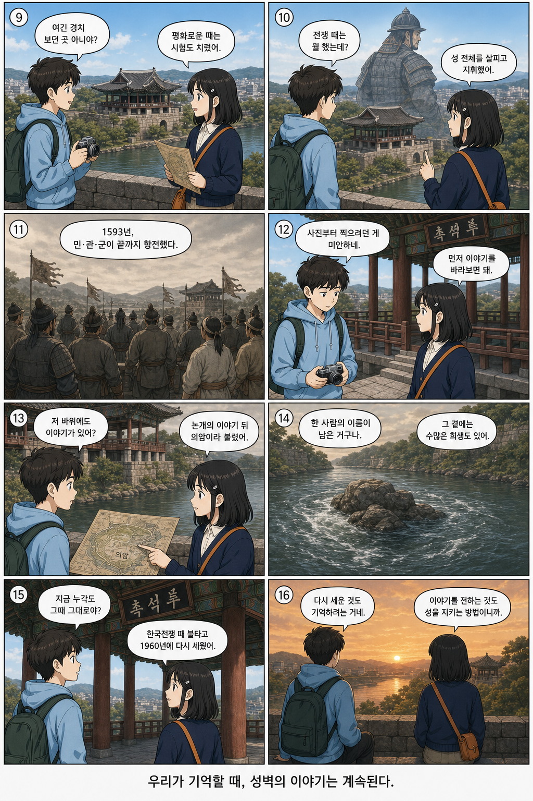
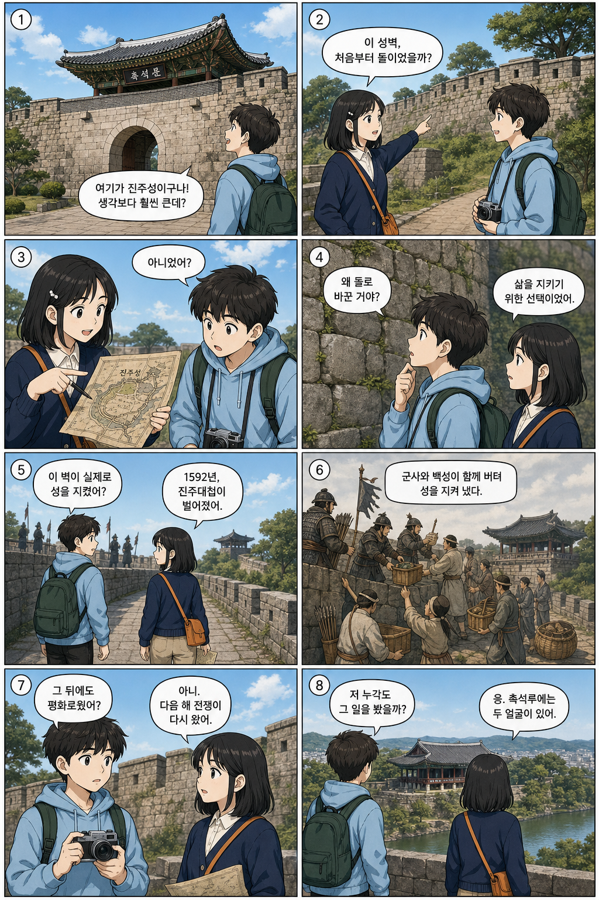

연재 시작
성벽이 들려준
이야기
관광지인 줄로만 알았던 진주성. 윤하와 도윤은 성벽을 따라 걸으며 돌 하나하나에 담긴 선택과 기억을 마주합니다.
A PERSONAL WEBTOON ARCHIVE · JINJU
진주의 풍경과 그 안에 머문 사람들의 기억을
짧은 웹툰과 작은 기록으로 전합니다.


오늘의 풍경에서
어제의 목소리를 듣다
ISSUE 001
2026
01
WEBTOON
두 친구가 진주성을 걸으며
장소에 새겨진 시간을 발견합니다.
연재 시작
관광지인 줄로만 알았던 진주성. 윤하와 도윤은 성벽을 따라 걸으며 돌 하나하나에 담긴 선택과 기억을 마주합니다.
02
OTHER NOTES
CHARACTER
한 명은 기억을 안내하고, 한 명은 질문합니다. 두 친구가 이야기를 바라보는 방식.
캐릭터 노트 · 01PLACE
촉석루에서 의암까지. 다음 장면을 찾기 위해 걸었던 짧은 답사 기록입니다.
장소 노트 · 02MAKING
자료 조사부터 대사, 콘티, 채색까지 웹툰 한 페이지의 제작 과정을 남깁니다.
작업 노트 · 03ABOUT THIS ARCHIVE
“다음 사람에게 이야기를 전하는 것도
성을 지키는 한 가지 방법일지 모릅니다.”
진주의 문화유산을 친근한 이야기로 기록하는 개인 창작 공간입니다.